El otro día me dio por crear. Y cuando imaginativo, pues suele salir algo curioso. En concreto, y en este caso, nos estamos refiriendo a una receta. Me dio por mezclar la gastronomía típica de dos países. Pensé “Cuando imagino Alemania, ¿qué comida se me viene a la cabeza?” Y pensé: “Bratwurst”. De esa primera noción al plato que os presento hoy, hay más de una línea de pensamiento, pero lo vais a ver sobre la marcha, pues como veréis, improvisé. Espero que os guste este Risotto de Baviera.
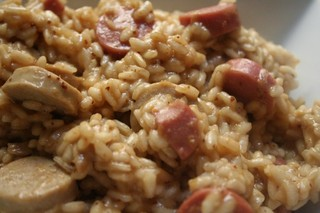
Ingredientes (para 5 personas)
- 1/2 kilo de arroz arborio
- 1 cebolla mediana
- 4 salchichas grandes (en este caso, 2 bratwurst y 2 bayernwurst)
- 1/2 litro de cerveza (en este caso, Franziskaner)
- 250 ml de caldo de pollo (o de verduras)
- 100 ml de mostaza (preferiblemente mostaza dulce, típica de Munich)
- 1 chorrito de nata
Preparación
Ya lo he dicho, pero lo repito. Esta receta no la había hecho nunca, sin más iba improvisando sobre la marcha, una vez definidos los ingredientes. ¿Qué podría proporcionar más sabor a Baviera que unas salchichas, una cerveza y mostaza dulce? Nada, era lo idóneo. Pero tonto de mi, no me di cuenta que el caldo iba a ser indispensable, como en todos los risottos que he hecho en mi vida, como el risotto manchego. La cerveza se consumiría rápidamente e impediría que el arroz se cociese adecuadamente, y por eso, el caldo de pollo no está en la foto inicial de ingredientes.
Al lío. Lo primero, como siempre, es partir los ingredientes. En este caso, reservamos 2 salchichas y cortamos el resto en trozos pequeños, junto con la cebolla. Calentamos aceite (no mucho, lo justo para pochar una cebolla) en una sartén grande, y comenzamos a dorar la cebolla, para después añadir las salchichas ya cortadas una vez la consideremos dorada. En un cazo aparte, calentamos la cerveza a fuego lento, para que vaya reduciendo.
Cuando las salchichas ya parezcan más hechas, será el momento de añadir el arroz a la sartén, todo de una vez. Removemos enérgicamente para que se mezclen todos los ingredientes y añadimos con un cazito, el primer “cucharón” de cerveza, distribuyendo lo mejor posible el riego. Removemos suavemente todo el contenido de la sartén, hasta que haya “chupado” todo el líquido, momento en el que repetiremos la acción, así hasta acabar con la cerveza, y a fuego medio tirando a bajo todo esto, que se me olvidaba…
Una vez acabada la cerveza, llegaréis al mismo punto que yo: “esto no se hace ni a tiros” y si a eso le sumamos lo rápido que se consumía cada cazo de cerveza, llegaréis a la misma conclusión que yo. Es turno del caldo (o del agua en su defecto, pero para mi es clave que sea caldo, la verdad). Calentamos 1/4 de litro de caldo de pollo (tal vez algo más, depende de cómo lo veáis) en la misma cazuela que teníamos la cerveza, y seguimos con la acción de verter el líquido, remover hasta que se consuma y volver a verter un cazo… Cuando queden pocos cazos, añadid el resto de las salchichas, cortadas previamente en rodajas.
Finalmente y tras, aproximadamente 30 minutos de cocción a fuego medio-bajo, lo tendréis listo. O casi, porque nos queda algo fundamental, la mostaza. Aquí también improvisé y fui echando hasta que cogió el gusto que yo quería, y eran 100 ml (la mitad del bote de mostaza dulce que tenía). Vertéis la mostaza y a remover, con energía. Por último, y tal vez como toque personal, le puse un chorrito de nata a la mezcla y removí de nuevo. Y ya estaba. Sólo había que emplatar y a comer. Que aproveche.
Resultado
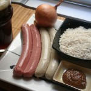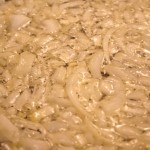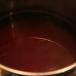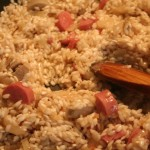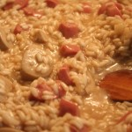Tiempo: 45 minutos
Dificultad: 3/5
Digestión: 4/5
Precio: 8€
 |
 |
 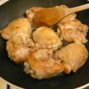
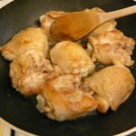


![DSCN4682[1]](DSCN46821-150x150.jpg "DSCN4682[1]")
![DSCN4681[1]](DSCN46811-150x150.jpg "DSCN4681[1]")
![DSCN4683[1]](DSCN46831-150x150.jpg "DSCN4683[1]")
![DSCN4705[1]](DSCN47051-150x150.jpg "DSCN4705[1]")


 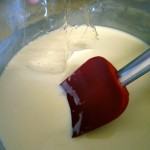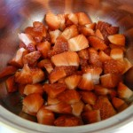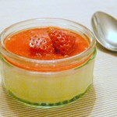
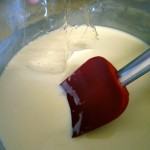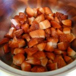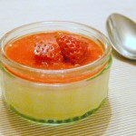 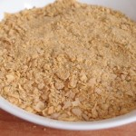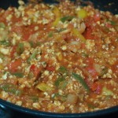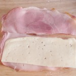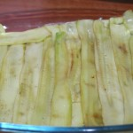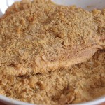
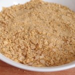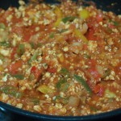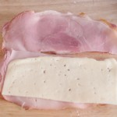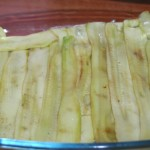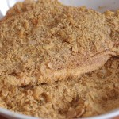 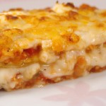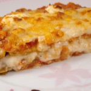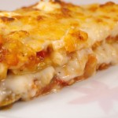
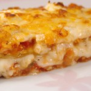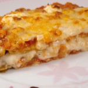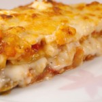


 Los aceites de oliva virgen y virgen extra se obtienen mediante los dos primeros métodos de extracción, siempre mecánicos y sin usar refinado. El virgen extra es el de máxima calidad, nunca debe sobrepasar los 0.8º de acidez y su nota de cata cualificada debe ser de 6.5 o mayor.
Los aceites de oliva virgen y virgen extra se obtienen mediante los dos primeros métodos de extracción, siempre mecánicos y sin usar refinado. El virgen extra es el de máxima calidad, nunca debe sobrepasar los 0.8º de acidez y su nota de cata cualificada debe ser de 6.5 o mayor.